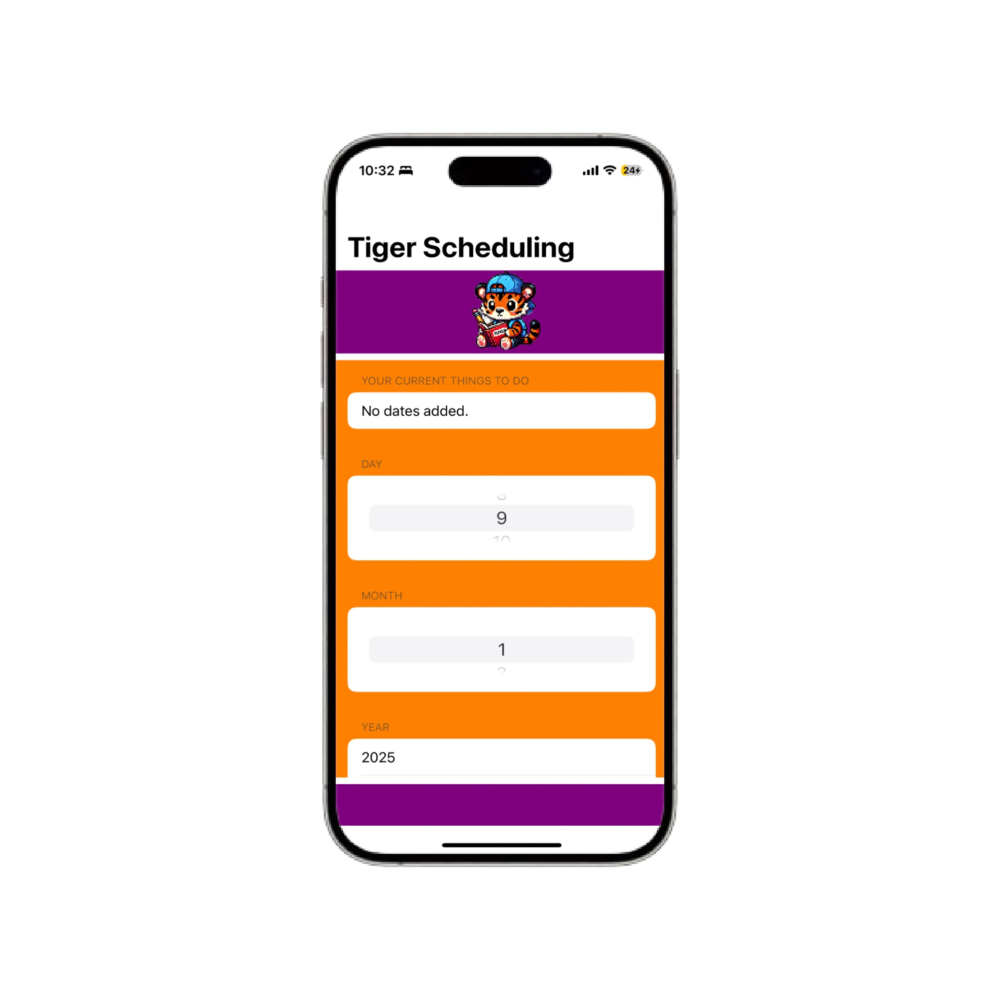
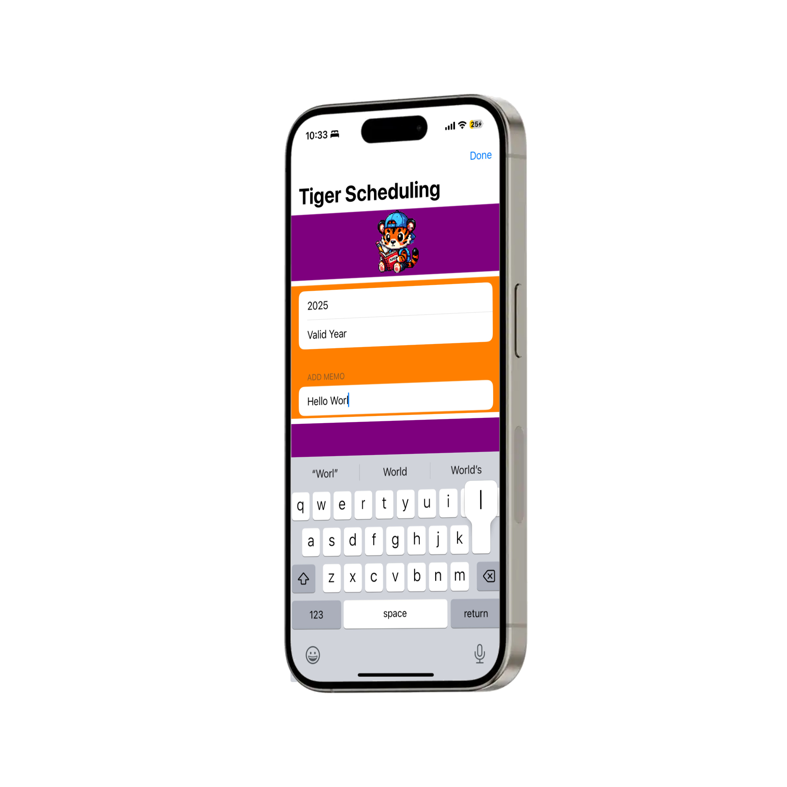
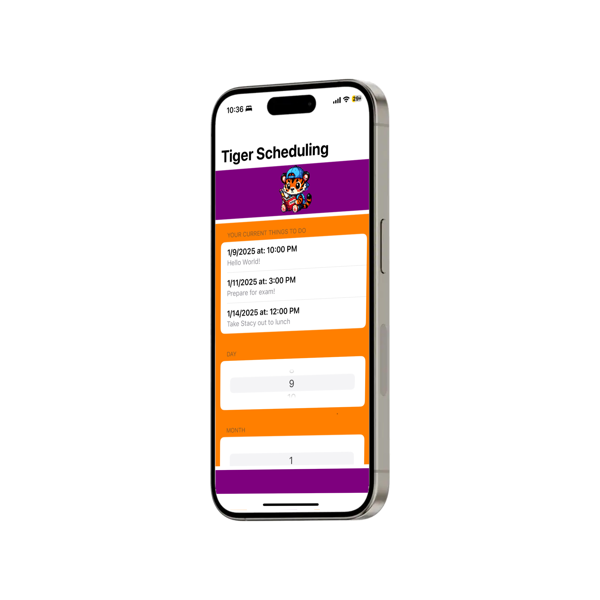

About this App
Tiger Scheduling is a passion project I worked on over Christmas Break of 2024. My goal was to sharpen my programming skills while learning how to develop an app using Swift. Personally, I am forgetful at times so making this App was a must-do to help me stay on top of my important tasks.
I hope you enjoy using this app, and I hope you find it useful to you and your friends.
Technologies used: Swift, SwiftUI, XCode, ChatGPT
Features of Tiger Scheduling
Tiger Scheduling is a simple solution for the busy person. It allows you effortlessly keep track of your day to day tasks via an easy to use and simple to navigate interface. Adding and deleting saved dates is just a click away, and built-in safeguards ensure your entries are error-free, so you'll never have to worry about incorrect dates being entered.
While using Tiger Scheduling, you can also add a 60-character long note for each date, giving it the context you need. These custom notes make it easier to remember exactly what needs to be accomplished.
One great feature of Tiger Scheduling is the ability to set reminders ahead of time. When you add a date, you are given the option of when you want to be reminded. Whether it’s a week in advance or on the same day, you’re always in control of when you want to be reminded. Got an exam or a deadline coming up? Simply set the date, choose when you’d like to be reminded, and let Tiger Scheduling handle the rest. Stay organized, stay ahead of the game!
Forgetful? This app is for you!
While it may be a simple passion project, this app can really make your life easier. It is simple to use and easy to navigate and when your long-term calendar is full, this app is the perfect solution for staying on top of your important tasks.
Still interested? Check it out on my GitHub and give it a try!